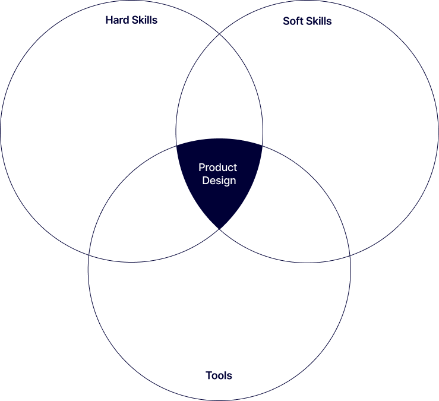
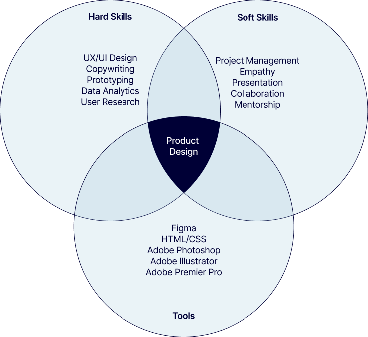
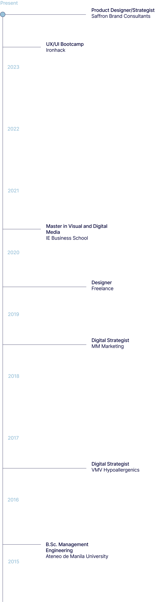

Skills
- UX/UI Design
- Interaction Design
- Prototyping
- Figma
- HTML
- CSS
- Product Strategy
- User Research
- Project Management
- Presentation
Fun facts
My story
Originally from Manila, my career started in Asia and brought me to Europe where I've worked on projects that span product design to brand experience.


After a stint in consultancy, I’ve decided to specialise in Product Design, an intersection of my personal and professional strengths.


My superpower lies in finding insights from research data and empathising with users to design value-adding solutions, which I bring to every project I work on.
My work and education
